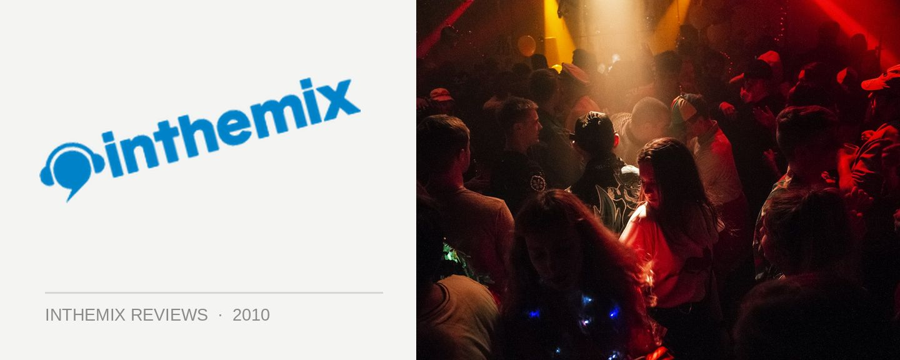

Joris Voorn + Riva Starr @ Chinese Laundry, Sydney (07/05/10)
It was the Friday night of the week after the Creamfields festival made its debut in Sydney, and it was time to return to that bastion of Sydney underground dance culture the Chinese Laundry – the venue that’s both the most loved for many punters, as well as the source of a lot of frustration. It’s such a cosy little venue, but this can just as often be a curse when they’re booking such a high-calibre of artists every weekend. Some of the world’s greatest dance artists really have gone through those doors – and this weekend, it was two of the best artists on the Creamfields lineup, on more of an underground tip – Italian electro/fidget heavyhitter Riva Starr, as well Holland maestro Joris Voorn, who was the one who gave me enough of a reason to venture out of the house on a freezing Autumn night. But with such awesome acts, it naturally often means a crapload of people wanna get in to see them. Would we be hampered by unbearably packed conditions?
Arriving around 11pm for a few cruisy drinks in the courtyard, I was reminded of how great a space it is for chilling out, catching up with friends and sinking a few comfortable bevvies while waiting for your favourite act to hit the decks. With heaters in place booming out the warmth to keep everyone nice and cosy, it’s a pleasant mix of the hardcore punters here for the main event downstairs, as well as the crew filtering down from the slightly more swish Stepp Inn upstairs. The cheesy hip hop anthems playing all night in the Sand Bar reflects this, but it works well in creating a relaxed atmosphere and not taking the focus off what’s happening downstairs. The courtyard is an integral part of the experience that is going to the Chinese Laundry – it just wouldn’t be the same without it, and it makes plenty of sense for it to host some of the bigger acts at the afternoon “Garden Parties”. Can’t wait for James Zabiela!
Heading downstairs around midnight, it was time for Italy’s Riva Starr to front up and do his thing. I was familiar with him in his previous lifetime as breaks producer Madox, and I’d written off his new alias as somewhat of a “novelty” after hearing the Balkan samples of I Was Drunk. However, as anyone who’s heard his kickin’ debut album When Life Gives You Lemons, Make Lemonade will understand, these samples are packed in tightly with punchy rhythms that don’t have any trouble shaking a dancefloor. He’s part of a new wave of electro that brings a massive groove to the table, and this was out in force in the Laundry on Friday night – big basslines, and he sure knows how to mix tightly. Grand, and definitely worth checking out next time he comes to Sydney.
Moving over to the Cave at 1pm to check out Joris Voorn, the room had packed out considerably by the time he came on – but it was on the right side of “bearable”. Squeeze another 10 people in there and it would have been extremely uncomfortable, but as it was, the room was brimming over with a fabulous crowd of people who were there for the man and were truly digging his sound, a great example of the Laundry crowd at its very best.
I’d seen Joris Voorn play a festival set in Canberra the week before, and for someone who’d blown minds with the deep, esoteric nature of his superb Balance compilation and Essential Mix for BBC Radio1 last year, he proved he certainly knew how to pitch it up for a big room. “House” was the operative word, some absolutely massive basslines were in full effect, and anyone that head the tunes on his Dusty House series of EPs last year will have a good idea – building from a fairly classic house music structure, before spinning it out into something altogether different and original, and markedly more futuristic. The vibe was pitched down in his set last Friday night to give it more of a clubby feel, but only marginally – this was bangin’ stuff with plenty of builds, which had the crowd throwing their hands in the air. We certainly didn’t get any 15 minute ambient introductions, that’s for sure.
Not that it was ever too “direct”, though. Joris is an intelligent guy, and this was intelligent music – plenty of loopy techno rhythms complimenting the funky basslines, and a truly full and rich collection of soundscapes and melodies that showed the progressive influence pushing through. And how very slick he is at working Traktor – layering and effects galore, it’s like a scaled back version of the elaborate splicing and interweaving we saw on his Balance CD. He’s developed into a consummate live performer, as well as a superb producer, and it was the perfect space to hear him do his thing. As much as our relationship with the Chinese Laundry can be love/hate at times, on Friday night it fell on the right side of “awesome”.